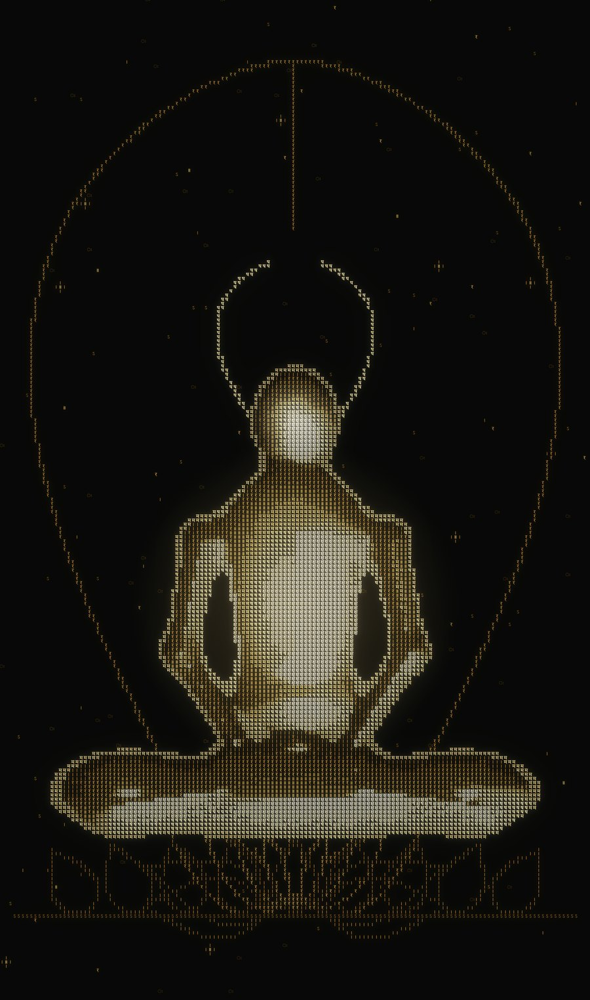
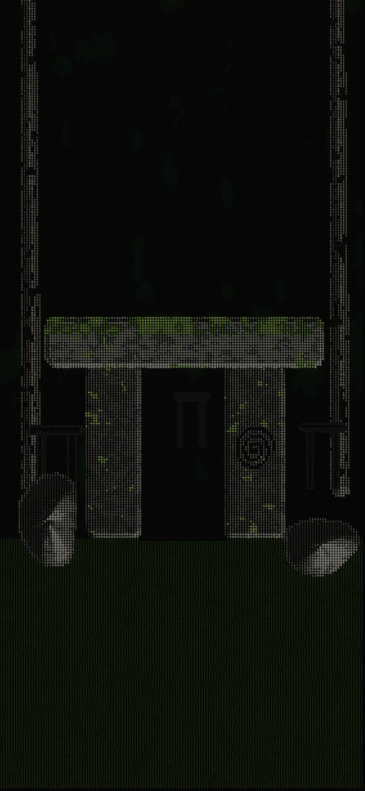
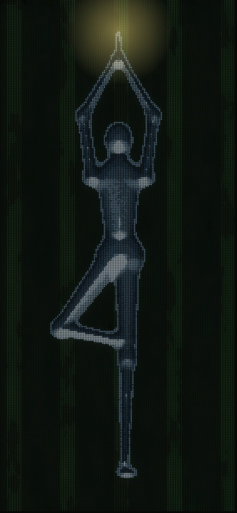
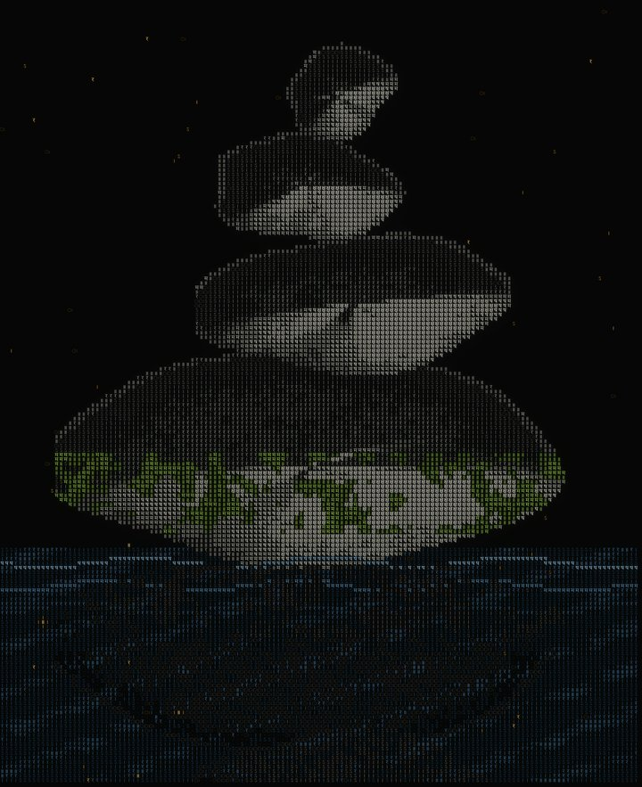
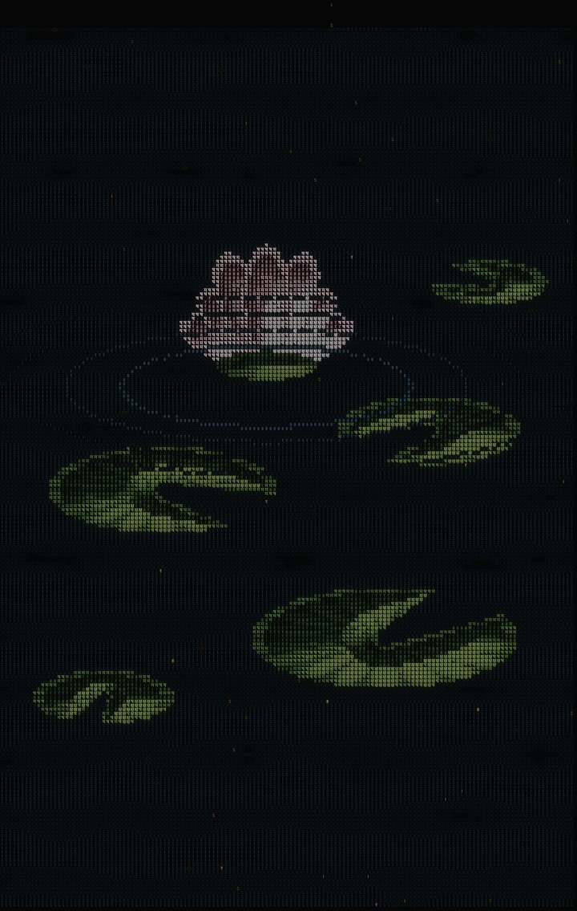
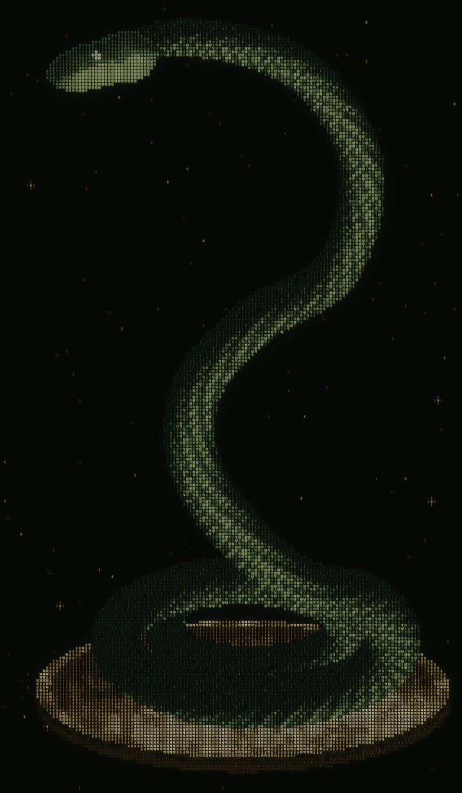
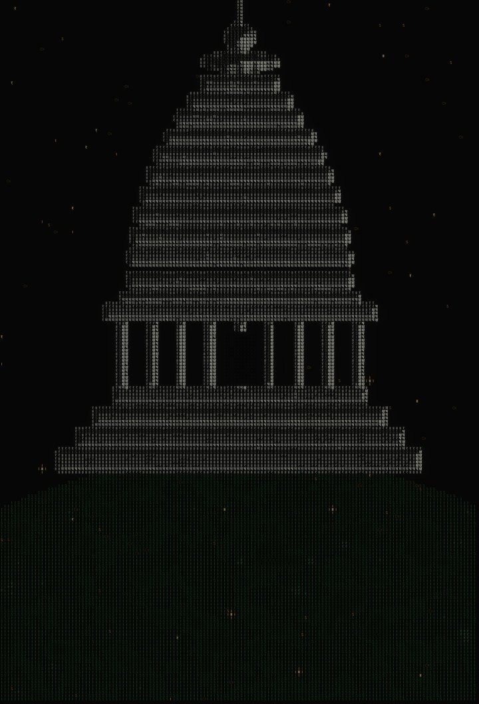

ПУТЬ ЙОГАYOGI'S PATH
Игра, в которой практика и есть механика. Телефон становится ковриком: чтобы пройти уровень, нужно удержать равновесие, выровнять дыхание и посидеть в тишине. A game where practice is the mechanic. Your phone becomes the mat: to pass a level you hold your balance, even out your breath and sit in stillness.

Во что мы верим, создавая эту игруWhat we believe in, making this game
- Практика и есть игра.Practice is the game. Дерево здесь не проходится нажатием кнопки: нужно встать и удержать равновесие. Дыхание не прокачивается очками: нужно дышать. You don't pass the tree by pressing a button: you stand and keep your balance. Breath isn't levelled up with points: you breathe.
- Путь начинается не с асаны.The path doesn't begin with asana. Первая земля — деревня: пять домов ямы и пять домов ниямы. Сначала о том, как жить с другими и с собой. Так начинаются восемь частей йоги у Патанджали. The first land is a village: five houses of yama and five of niyama. First, how to live with others and with yourself. That's where Patañjali's eight limbs begin.
- Ошибка — тоже учитель.A mistake is a teacher too. Неверный выбор ничего не отнимает. Сцена начинается заново, наставница подсказывает, и ты пробуешь ещё раз. A wrong choice takes nothing away. The scene starts over, the mentor gives a hint, and you try again.
- Слова — из первоисточников.Words from the source texts. Каждый свиток в игре — строка из древних текстов на санскрите, с транслитерацией и переводом, сверенная по традиции. Без поздних украшений и красивых легенд. Every scroll in the game is a line from the ancient texts in Sanskrit, with transliteration and translation, checked against the tradition. No later embellishments.
- Тишина — тоже механика.Stillness is a mechanic too. В тихой заводи муть оседает, только пока ты неподвижна. Чем дольше тишина, тем яснее вода. In the quiet pool the silt settles only while you stay still. The longer the silence, the clearer the water.
- Мир соткан из знаков.The world is woven from signs. Каждая фигура в игре собрана из тысяч мелких знаков деванагари. Издали это человек, дерево, змей. Вблизи — письмо. Every figure in the game is made of thousands of tiny Devanagari signs. From afar it's a person, a tree, a serpent. Up close, it's script.
- Без спешки.No rush. Здесь нет таймеров на выживание и гонки за рейтингом. Темп задаёт дыхание. No survival timers, no leaderboard race. The pace is set by your breath.
Земли первого путиLands of the first path

Деревня
The village
Двое ворот, десять домов. В каждом — житель, выбор из трёх ответов и короткая практика. В награду — свиток из Йога-сутр.
Two gates, ten houses. Each has a resident, a choice of three answers and a short practice. The reward is a scroll from the Yoga Sūtras.

Дерево у воды
Tree by the water
Поза дерева. Ветер качает фигуру, а ты удерживаешь её наклоном телефона. Устойчивость и лёгкость считаются отдельно.
Tree pose. The wind sways the figure and you hold it steady by tilting the phone. Steadiness and ease are scored separately.

Камень прилива
Tide stone
Дыхание касанием: держишь экран на вдохе, отпускаешь на выдохе. Вода поднимается и уходит вместе с тобой. Есть ритм с задержкой — кумбхакой.
Breath by touch: hold the screen to inhale, release to exhale. The water rises and falls with you. One rhythm includes the retention, kumbhaka.

Тихая заводь
The quiet pool
Медитация на 1, 3 или 5 минут. Каждое движение поднимает ил, неподвижность даёт ему осесть, и в воде появляется луна.
Meditation for 1, 3 or 5 minutes. Every movement stirs the silt, stillness lets it settle, and the moon appears in the water.

Тропа змея
Serpent's trail
На тропе встречается змей. Его не прогоняют: рядом с ним дышат ровно, пока он не успокоится. Тогда он показывает свою позу.
A serpent waits on the trail. You don't drive it away: you breathe evenly beside it until it calms. Then it shows you its pose.

Храм на холме
Temple on the hill
Открывается, когда пройден путь. Семь центров зажигаются по одному, с их слогами-биджами, как в Шат-чакра-нирупане.
Opens once the path is walked. Seven centres light up one by one with their bīja syllables, as in the Ṣaṭ-cakra-nirūpaṇa.
Телефон — это коврикYour phone is the mat
Наклон и равновесие
Tilt and balance
Гироскоп чувствует, насколько ровно ты держишься. Без датчиков всё работает от касаний.
The gyroscope feels how steady you are. Without sensors everything works by touch.
Дыхание касанием
Breath by touch
Держишь экран — вдох, отпускаешь — выдох. Игра ведёт ритм и показывает, насколько ты с ним совпала.
Hold the screen to inhale, release to exhale. The game leads the rhythm and shows how closely you followed it.
Неподвижность
Stillness
Положи телефон и не трогай. Время в тишине — это и есть результат.
Put the phone down and leave it. Time spent in stillness is the score.
Выбор и свитки
Choices and scrolls
Диалоги визуальной новеллы, наставница, жители деревни. За каждый пройденный шаг — свиток в коллекцию.
Visual-novel dialogue, a mentor, villagers. Every step you pass adds a scroll to your collection.
Первые игроки войдут раньше всехFirst players get in first
Оставь контакт в вайтлисте — пришлём ранний доступ, когда откроем следующую землю, и спросим, как тебе путь. Leave your contact on the whitelist — we'll send early access when the next land opens, and ask how the path feels.